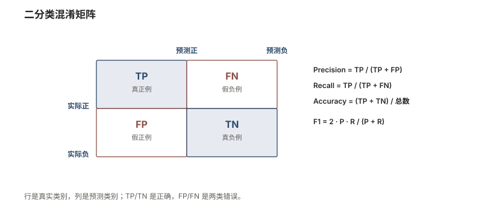

SCI101 · 第 8 章
模型评估指标
Model Evaluation Metrics
虚线下划线为术语；悬停查看中文、英文与释义，完整词典见“术语”。
本章目录
本讲把“模型好不好”拆成三套指标：分类（准确率、精确率、召回率、F1、ROC-AUC、PR 曲线）、回归（MAE、MSE、RMSE、R²）、聚类（轮廓系数、ARI），并对每个指标给出可复算的算例。
本章要点
- 混淆矩阵的四格是 TP、FP、TN、FN，全部指标都由这四格推出。
- Accuracy = (TP+TN)/总数；Precision = TP/(TP+FP)；Recall = TP/(TP+FN)；F1 是二者的调和平均。
- 假警报代价高时选精确率；漏检代价高时选召回率；类别不平衡时用 F1 或 PR 曲线。
- 概率输出需先设阈值才变成类别；阈值移动会同时改变 TPR 与 FPR，描出 ROC 曲线。
- AUC 是 ROC 曲线下面积，随机猜测对应对角线 TPR = FPR，AUC = 0.5。
- 回归看 MAE/MSE/RMSE（越低越好）与 R²（越高越好）；聚类看轮廓系数与 ARI。
8.1 为什么需要“成绩单”
讲义从“这张图是猫还是狗”开始：把图片特征送入模型，模型输出类别，这就是分类问题。分类被比作一台分拣机——给它输入（图片特征），它把样本放进某个类别。但分拣机好不好，需要一张性能报告卡performance card：准确率（Accuracy）、精确率（Precision）、召回率（Recall）与 F1 分数。
报告卡的必要性在于：单看“对了多少”会被数据分布欺骗。讲义在 PR 曲线一节给出极端例子——1000 人中只有 10 人患病，若对所有人一律猜“没病”，准确率高达 99%，但模型毫无用处。因此需要能分别衡量“抓到了多少”和“报对了多少”的指标。
Metrics slide 3–4
8.2 混淆矩阵：四个格子
讲义约定：猫为正类（positive），狗为负类（negative）。四个格子的含义由此展开：
- TP（true positive）：实际是猫，模型也说猫；
- FN（false negative）：实际是猫，模型说狗——漏检；
- FP（false positive）：实际是狗，模型说猫——假警报；
- TN（true negative）：实际是狗，模型也说狗。
讲义给的完整算例是 102 张图片，其中 62 张猫、40 张狗。矩阵为：预测猫/实际猫 50，预测猫/实际狗 10，预测狗/实际猫 12，预测狗/实际狗 30。行列合计可自检：50 + 12 = 62（实际猫），10 + 30 = 40（实际狗）。


绘图提示词
Clean vector two by two confusion matrix table with rows labelled actual cat and actual dog, columns labelled predicted cat and predicted dog, cells filled with counts 50, 10, 12, 30, and each cell annotated TP, FP, FN, TN respectively in small text. Flat 2D, thin 1.5 px strokes, muted slate blue and warm grey palette, white background, English labels, no cartoon, no gradient, no shadow.
要点是“正类可以任选，但选定后不能中途改”：讲义明确写“你可以假设任何一类为正”，一旦把猫定为正类，FN 就只能是“实际是猫却判成狗”。换正类会让精确率与召回率互换，这一点在做题时必须先看清题目定义。
Metrics slide 5–10
8.3 四个分类指标与算例
用上节矩阵的四个数（TP=50、FP=10、FN=12、TN=30），四个指标逐一算出：
讲义的原文把 Accuracy 记为 0.80、Precision 与 Recall 都记为 0.833、F1 也记为 0.833；按上表逐项代入，Recall 应为 50/62 ≈ 0.806，F1 ≈ 0.820，Accuracy 应为 80/102 ≈ 0.784。差异来自讲义对 Recall 的取值沿用了 Precision 的数字。复习时以公式为准，考试若给同样的四个格子，按公式重算。
三个指标的含义分别是：Accuracy 回答“总体上多常是对的”；Precision 回答“当它说是猫时，有多常是对的”；Recall 回答“实际是猫的样本中，它找到了多少”；F1 是精确率与召回率的调和平均，给出一个平衡的单一分数。
| 指标 | 公式 | 回答 |
|---|---|---|
| Accuracy | (TP+TN)/全部 | 整体正确率 |
| Precision | TP/(TP+FP) | 报警中有多少是真的 |
| Recall | TP/(TP+FN) | 真目标中抓到了多少 |
| F1 | 2PR/(P+R) | 精确与召回的平衡 |
Metrics slide 11
8.4 何时用精确率、何时用召回率
讲义用两个真实场景说明指标选择取决于“错误的代价”，而不是数学上的优劣。
场景一：飞机零件裂纹检测（重精确率）。100 个零件中 95 个完好、5 个有裂纹，定义正类为“有裂纹”。矩阵为 TN=92、FN=1、FP=3、TP=4。精确率 = 4/(4+3) = 4/7 ≈ 0.57，意味着模型说“有裂纹”时约 43% 是假警报；后果是 3 个完好零件被错误拒收，浪费钱并带来不必要的返工。
场景二：癌症筛查（重召回率）。200 人中 180 人健康、20 人患癌，定义正类为“患癌”。矩阵为 TN=175、FN=3、FP=5、TP=17。召回率 = 17/(17+3) = 0.85，即 15% 的癌症病例被漏掉；后果是 3 位病人得不到及时治疗，可能危及生命。
讲义把选择规则写成一句口诀：假警报代价高时选精确率；漏检危险时选召回率；数据不平衡且两者都要顾及时用 F1。
Metrics slide 12–14
8.5 概率输出与阈值
有些模型不直接给类别，而给概率：例如“这张图是猫的概率 90%”。这时不能直接与真实标签比较，必须先用阈值threshold把概率转成类别。
讲义的五人算例：A（实际感染，0.92）、B（健康，0.75）、C（感染，0.60）、D（健康，0.40）、E（健康，0.10）。正类为感染，故 P = 2（A、C），N = 3（B、D、E）。取阈值 ≥ 0.92 时，只有 A 被判为感染：TP = 1、FP = 0、TN = 3、FN = 1（C 被漏掉）。
若把阈值降到 0.60，A 与 C 都判为感染，TP 变为 2、FN 变为 0；同时 B（概率 0.75）也越过阈值被判为感染，FP 变为 1。这体现一条基本规律：阈值越低，被判为正类的样本越多，召回率上升、精确率通常下降。讲义在 p.19 的思考题正是此意——若目标是“几乎找出所有感染者，即使让部分未感染者接受不必要的抗生素”，应把阈值设得很低（如 0.10）。
Metrics slide 15–22
8.6 构造 ROC 曲线
讲义把 ROC 拆成三个词解释：Receiver = AI，Operating = 设置（阈值），Characteristic = AI 的输出。纵轴是真正率 TPR = TP/P（即召回率），横轴是假正率 FPR = FP/N。
对五人数据逐个阈值计算，得到五个点：
| 阈值 | TP | FP | TN | FN | TPR | FPR |
|---|---|---|---|---|---|---|
| >0.92 | 1 | 0 | 3 | 1 | 0.50 | 0.00 |
| >0.75 | 1 | 1 | 2 | 1 | 0.50 | 0.33 |
| >0.60 | 2 | 1 | 2 | 0 | 1.00 | 0.33 |
| >0.40 | 2 | 2 | 1 | 0 | 1.00 | 0.67 |
| >0.10 | 2 | 3 | 0 | 0 | 1.00 | 1.00 |
把这些点按 FPR 排序连线即得 ROC 曲线。左上角（FPR=0、TPR=1）是理想点；对角线 TPR = FPR 代表随机猜测random guessing——讲义的原题正是问这条虚线代表什么，答案是 TPR = FPR。

Clean vector ROC plot with false positive rate on the horizontal axis from 0 to 1 and true positive rate on the vertical axis from 0 to 1, five labelled points at coordinates (0,0.5), (0.33,0.5), (0.33,1), (0.67,1), (1,1) connected by a stepped line, plus a dashed diagonal line labelled random guessing. Flat 2D, thin 1.5 px strokes, muted slate blue and warm grey palette, white background, English labels, no cartoon, no gradient, no shadow.
Metrics slide 23–24
8.7 AUC 与 PR 曲线
AUCarea under curve 是 ROC 曲线下的面积。讲义用梯形法手算得到 0.8333，并给出解读：AUC 越高，识别感染者的机会越大。它把整条曲线压缩成一个数，因此不受单一阈值影响；0.5 相当于随机，1.0 是完美。
但 ROC 在不平衡数据上会“过于乐观”。讲义的例子是 1000 人中仅 10 人患病（1%）：全猜“没病”就有 99% 准确率，ROC 曲线也可能看起来不错，因为 FPR 的分母是 990 个健康人，少量假警报被稀释。此时应改用 PR 曲线precision-recall curve：横轴是召回率，纵轴是精确率，全部注意力集中在正类（病人）上。
PR 曲线的两个极端都要理解：高精确率意味着“说某人是病人时基本正确”，假警报会造成恐慌与医疗资源浪费；高召回率意味着“病人基本都被找到”，漏检则延误治疗。曲线展示的正是这一权衡。
Metrics slide 25–31
8.8 ROC-AUC 还是 PR：选择规则
讲义把选择写成两条对称的规则，可直接背：
| 条件 | 用 ROC-AUC | 用 PR 曲线 |
|---|---|---|
| 类别比例 | 大致平衡（如 50% 健康、50% 感染） | 明显不平衡（如 99% 健康、1% 患病） |
| 关注点 | 同等看待“抓到正类”与“避免假警报” | 更关心把罕见的那一类找对 |
| 回答 | 整体排序能力 | 正类上的精确—召回权衡 |
讲义强调两条曲线都“帮助你理解单一阈值之外的表现”，也就是说它们不是替代某个指标，而是提供全局视角：一个模型可以在某阈值下精确率很高，但整体曲线很差。
Metrics slide 32
8.9 回归指标：MAE、MSE、RMSE、R²
回归的算例来自材料科学：用碳含量与热处理温度预测合金的抗拉强度（MPa）。五个样本的实测值为 520、610、700、560、640，预测值为 510、590、730、550、660，误差分别为 +10、+20、−30、+10、−20。
四者的解读分别是：MAE 回答“平均差多少 MPa，忽略符号”；MSE 把误差平方，使大误差受更重惩罚，单位变成 (MPa)²；RMSE 取平方根回到 MPa，便于与原始量纲比较；R² 是决定系数，越高越好，0.903 表示模型解释了约 90.3% 的变异。前三个都是越低越好。
Metrics slide 33–35
8.10 聚类指标：轮廓系数与 ARI
聚类的评估分两类：无真实标签时看“簇内紧、簇间远”；有真实标签时看“聚类结果与真实分组的一致程度”。
轮廓系数silhouette score 对每个样本问两个问题：a(i) 是我离自己组内同伴有多近（越低越好，表示簇紧）；b(i) 是我离另一组最近的同伴有多近（越高越好，表示离别人远）。讲义给出的六病人例（白细胞计数、C 反应蛋白、体温）算出整体轮廓系数 0.82，解读为“每个病人都离自己组更近，聚类形状很好”。取值判读是：接近 1 很好；接近 0 在边界上；为负可能分错了组。讲义的 s(i) 公式以图给出、未被文本化，复习时按“b 越大、a 越小则分数越高”把握方向即可。
调整兰德指数adjusted Rand index（ARI）在有真实分组时使用，衡量你的分组与真实分组的一致程度，并对“运气”做校正。讲义的四个孩子例子：老师的分组是 {1,2} 与 {3,4}，你的分组是 {1,3} 与 {2,4}；六对关系中只有 (1,4) 与 (2,3) 两边都“分开”，一致率为 RI = 2/6 = 0.333。ARI 的判断是：这 0.333 主要是运气，校正后接近 0。取值范围是 1 = 完全一致、0 ≈ 随机、负值 = 比随机更差。
Metrics slide 36–41